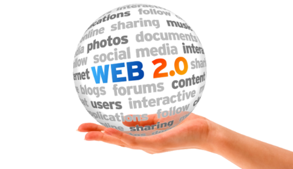
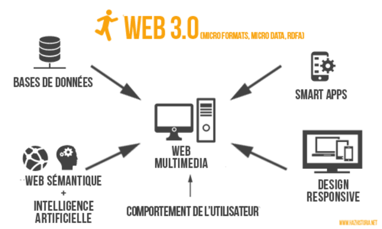

Linea de Tiempo
| Evolucion de las Aplicaciones |
| Hitos |
Hechos |
Imagenes |
Referencia |
| Internet | - Nacimiento del InterNetworking Working Group
Organización encargada de administrar internet.
-
Se crea la TCP/IP usado para comunicacion en redes
-
Desarrollo de Aplicaciones Web "Perl"
|
| | https://www.timetoast.com/timelines/linea-del-tiempo-de-las-aplicaciones-web |
| Web 1.0 | -
Es la forma más básica que existe, con navegadores de sólo texto bastante rápidos ya que es de sólo lectura.
- Se crea Python es un lenguaje interpretado, usa tipado dinámico y es multiplataforma.
- El protocolo de transferencia de hipertexto
|  | |
|
| Web 2.0 | - Permite a los usuarios interactuar y colaborar entre sí como creadores de contenido generado por usuarios en una comunidad virtual.
- Es una técnica de desarrollo web para crear aplicaciones interactivas o RIA, estas aplicaciones se ejecutan en el cliente es decir en el navegador. Mejorando la interactividad, velocidad y usabilidad en las aplicaciones.
|  | |
| web 3.0 | - Se utiliza para describir la evolución del uso y la interacción de las personas en internet a través de diferentes formas entre las que se incluyen las trasformaciones de la red en una base de datos.
Bases de Datos
Inteligencia artificial
Web semántica y SOA
Evolución 3D
|  | |